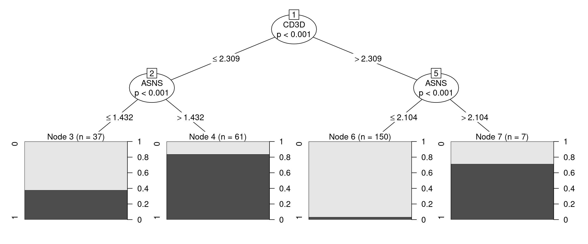
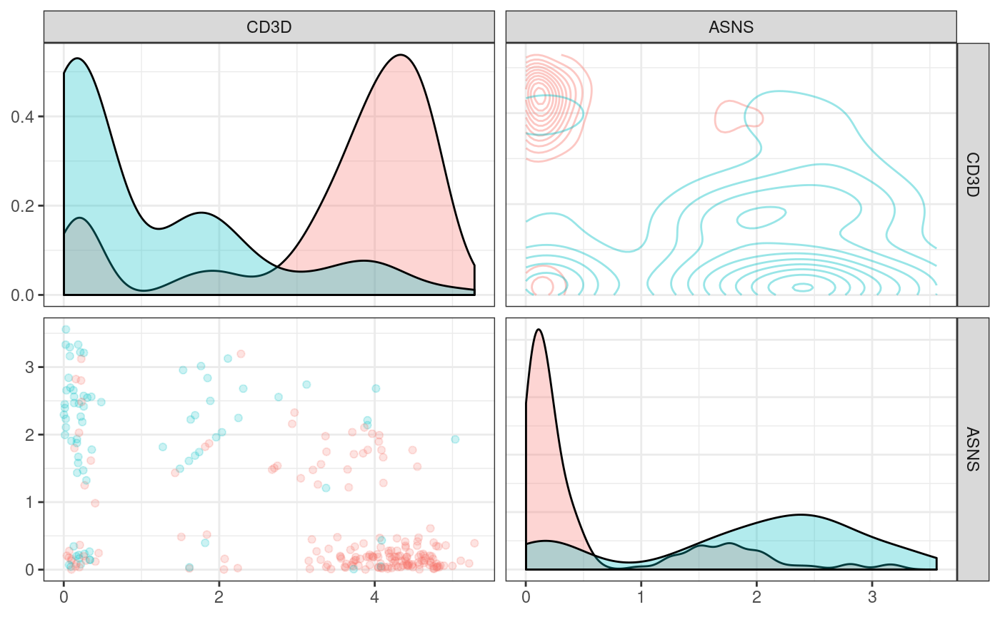
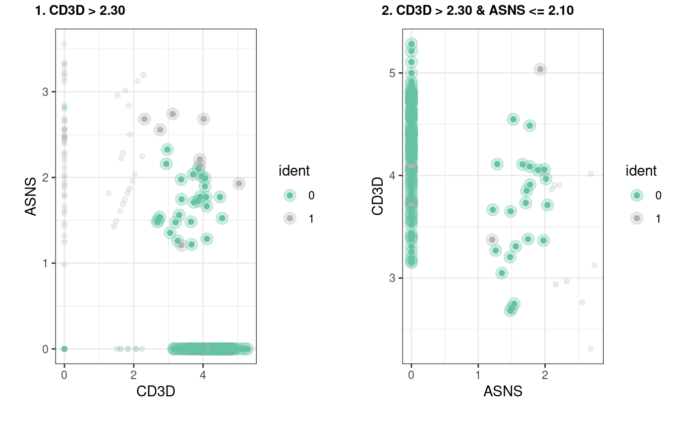

suggesting_strategies.RmdSuggesting a gating strategy for the markers
A general strategy to get separate all clusters
## [1] "MZB1" "CD3G" "CD3D" "ASNS" "CA2" "HEY1"## Warning: The following arguments are not used: uniq, cells.use## Suggested parameter: cells instead of cells.useVisualizing the tree as … a tree … we can see how our model is a simple series of yes/no questions.
If we wanted to classifiy a random cell: in the first node, we check if the expression of that gene is higher or lower than a given value, if it is lower, we proceed to the left, if not we go right. We keep doing that until we have no more branches. This final node will have a predicted cluster, in this plot we can also see how pure can we expect this group to be and how many of the cells in our training set clasify as part of it.

When inspecting the tree_fit, we can see a more detailed text representation of this tree.
##
## Model formula:
## ident ~ MZB1 + CD3G + CD3D + ASNS + CA2 + HEY1
##
## Fitted party:
## [1] root
## | [2] CD3D <= 2.30877
## | | [3] ASNS <= 1.43241: 0 (n = 37, err = 37.8%)
## | | [4] ASNS > 1.43241: 1 (n = 61, err = 16.4%)
## | [5] CD3D > 2.30877
## | | [6] ASNS <= 2.10406: 0 (n = 150, err = 3.3%)
## | | [7] ASNS > 2.10406: 1 (n = 7, err = 28.6%)
##
## Number of inner nodes: 3
## Number of terminal nodes: 4Sometimes one might think that the proposed strategy is too complicated or not implementable in the experimental settings, in order to add constrians to the fit one can give additional arguments that will be passed to partykit::ctree_control, such as maxdepth = 2 (maximum 2 questions per cell)
## Warning: The following arguments are not used: uniq, cells.use## Suggested parameter: cells instead of cells.use##
## Model formula:
## ident ~ MZB1 + CD3G + CD3D + ASNS + CA2 + HEY1
##
## Fitted party:
## [1] root
## | [2] CD3D <= 2.30877
## | | [3] ASNS <= 1.43241: 0 (n = 37, err = 37.8%)
## | | [4] ASNS > 1.43241: 1 (n = 61, err = 16.4%)
## | [5] CD3D > 2.30877
## | | [6] ASNS <= 2.10406: 0 (n = 150, err = 3.3%)
## | | [7] ASNS > 2.10406: 1 (n = 7, err = 28.6%)
##
## Number of inner nodes: 3
## Number of terminal nodes: 4
Since not all variables are ultimately used in our classifier, one can acces the ones that were by using varimp(tree_fit)
## CD3D ASNS
## 0.2849840 0.1505534## Warning: The following arguments are not used: uniq, cells.use## Suggested parameter: cells instead of cells.use
One can also request the package to suggest a specific strategy only for a given cluster. This function is not expected to give drastically different results in datasets with few clusters, but it can definitely come usefull when many clusters are present and one is interested in a specific one.
## Warning: The following arguments are not used: uniq, cells.use## Suggested parameter: cells instead of cells.use##
## Model formula:
## ident ~ MZB1 + CD3G + CD3D + ASNS + CA2 + HEY1
##
## Fitted party:
## [1] root
## | [2] CD3D <= 2.30877
## | | [3] ASNS <= 1.43241: clus 0 (n = 37, err = 37.8%)
## | | [4] ASNS > 1.43241: not clus 0 (n = 61, err = 16.4%)
## | [5] CD3D > 2.30877
## | | [6] ASNS <= 2.10406: clus 0 (n = 150, err = 3.3%)
## | | [7] ASNS > 2.10406: not clus 0 (n = 7, err = 28.6%)
##
## Number of inner nodes: 3
## Number of terminal nodes: 4Sometimes it is useful to visualize directly the subset of cells that will be “gated” out in each rule, this can be easily achieved by using our implementation of plot_gates
## Warning: The following arguments are not used: uniq, cells.use## Suggested parameter: cells instead of cells.use
We have also implemented a way to export these rules as a garnett classifier. for more detail on how the calssifier is implemented please refer to the garnett documentation
## > clus 0_node_3 (n = 37)
## expressed below: ASNS 1.432, CD3D 2.309
##
## > clus 0_node_6 (n = 150)
## expressed above: CD3D 2.309
## expressed below: ASNS 2.104
##
## > not clus 0_node_4 (n = 61)
## expressed above: ASNS 1.432
## expressed below: CD3D 2.309
##
## > not clus 0_node_7 (n = 7)
## expressed above: ASNS 2.104, CD3D 2.309